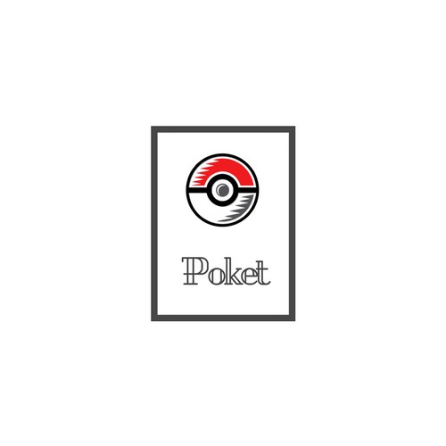

<!--
  Generated template for the MainPage page.

  See http://ionicframework.com/docs/components/#navigation for more info on
  Ionic pages and navigation.
-->

<ion-nav #content></ion-nav>

<ion-menu [content]="content">
  <ion-header>
    <ion-toolbar>
      
    </ion-toolbar>
  </ion-header>
  <ion-content>
    <ion-list>
      <button ion-item (click)="toLog()">
        Battle Log
      </button>
      <button ion-item (click)="toSettings()">
        Settings (Future update)
      </button>
    </ion-list>
  </ion-content>
</ion-menu>

<div>
  <ion-card *ngIf="geolocator.rival">
    <div class="card-title">Rival found!</div>
  </ion-card>
</div>

<ion-content class="card-background-page">

  <ion-card>
    
    <div class="card-title">Team (Future update)</div>
  </ion-card>

  <ion-card class="card">
    
    <div class="card-title">Items (Future update)</div>
  </ion-card>

  <ion-card class="card">
    
    <div class="card-title">Shop (Future update)</div>
  </ion-card>

</ion-content>
